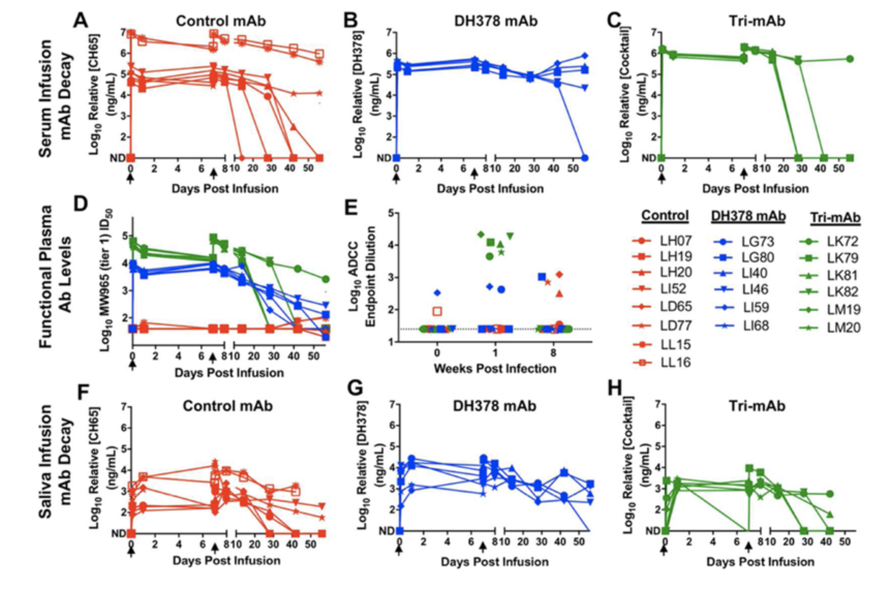

Different adjuvanted pediatric HIV envelope vaccines induced distinct plasma antibody responses despite similar B cell receptor repertoires in infant rhesus macaques
PLOS ONE, 2021

Stella J. Berendam, Papa K. Morgan-Asiedu, Riley J. Mangan, Shuk Hang Li, Holly Heimsath, Kan Luo, Alan D. Curtis, II, Joshua A. Eudailey, Christopher B. Fox, Mark A. Tomai, Bonnie Phillips, Hannah L. Itell, Erika Kunz, Michael Hudgens, Kenneth Cronin, Kevin Wiehe, S. Munir Alam, Koen K. A. Van Rompay, Kristina De Paris, Sallie R. Permar, M. Anthony Moody, Genevieve G. Fouda
PDFSystemic and mucosal levels of lactoferrin in very low birth weight infants supplemented with bovine lactoferrin
Biochem Cell Biol., 2021
Hannah L. Itell, Andrew Berenz, Riley J. Mangan, Sallie R. Permar, and David A. Kaufman
PDFMaternal Broadly Neutralizing Antibodies Can Select for Neutralization-Resistant, Infant-Transmitted/Founder HIV Variants
mBio, 2020
David R. Martinez, Joshua J. Tu, Amit Kumar, Jesse F. Mangold, Riley J. Mangan, Ria Goswami, Elena E. Giorgi, Juilin Chen, Michael Mengual, Ayooluwa O. Douglas, Holly Heimsath, Kevin O. Saunders, Nathan I. Nicely, Joshua Eudailey, Giovanna Hernandez, Papa Kwadwo Morgan-Asiedu, Kevin Wiehe, Barton F. Haynes, M. Anthony Moody, Celia LaBranche, David C. Montefiori, Feng Gao, Sallie R. Permar

Analytical Treatment Interruption after Short-Term Antiretroviral Therapy in a Postnatally Simian-Human Immunodeficiency Virus-Infected Infant Rhesus Macaque Model
mBio, 2019
Ria Goswami, Ashley N. Nelson, Joshua J. Tu, Maria Dennis, Liqi Feng, Amit Kumar, Jesse Mangold, Riley J. Mangan, Cameron Mattingly, Alan D. Curtis II, Veronica Obregon-Perko, Maud Mavigner, Justin Pollara, George M. Shaw, Katharine J. Bar, Ann Chahroudi,Kristina De Paris, Cliburn Chan, Koen K. A. Van Rompay, Sallie R. Permar
PDFSimian-Human Immunodeficiency Virus SHIV.CH505-Infected Infant and Adult Rhesus Macaques Exhibit Similar Env-Specific Antibody Kinetics, despite Distinct T-Follicular Helper and Germinal Center B Cell Landscapes
J Virol, 2019
Ashley N. Nelson, Ria Goswami, Maria Dennis, Joshua Tu, Riley J. Mangan, Pooja T. Saha, Derek W. Cain, Alan D. Curtis, Xiaoying Shen, George M. Shaw, Katharine Bar, Michael Hudgens, Justin Pollara, Kristina De Paris, Koen K. A. Van Rompay, Sallie R. Permar

Determinants of Tenascin-C and HIV-1 envelope binding and neutralization
J Mucosal Immunology, 2019
Riley J. Mangan, Lisa Stamper, Tomoo Ohashi, Joshua A. Eudailey, Eden P. Go, Frederick H. Jaeger, Hannah L. Itell, Brian E. Watts, Genevieve G. Fouda, Harold P. Erickson, S. Munir Alam, Heather Desaire and Sallie R. Permar
PDFA conserved retromer-independent function for RAB-6.2 in C. elegans epidermis integrity
Journal of Cell Science, 2019
Jonathan D. Kim, Andy Y. Chun, Riley J. Mangan, George Brown, Bruno Mourao Pacheco, Hannah Doyle, Austin Leonard and Rachid El Bejjani

Predominant envelope variable loop 2-specifc and gp120-specifc antibody-dependent cellular cytotoxicity antibody responses in acutely SIV-infected African green monkeys
Retrovirology, 2018
Quang N. Nguyen, David R. Martinez, Jonathon E. Himes, R. Whitney Edwards, Qifeng Han, Amit Kumar, Riley Mangan,, Nathan I. Nicely, Guanhua Xie, Nathan Vandergrift, Xiaoying Shen, Justin Pollara, and Sallie R. Permar

Polyclonal HIV envelope-specific breast milk antibodies limit founder SHIV acquisition and cell-associated virus loads in infant rhesus monkeys
Mucosal Immunology, 2018
Jonathon E. Himes, Ria Goswami, Riley J. Mangan, Amit Kumar, Thomas L. Jeffries Jr., Joshua A. Eudailey, Holly Heimsath, Quang N. Nguyen, Justin Pollara, Celia LaBranche, Meng Chen, Nathan A. Vandergrift, James W. Peacock, Faith Schiro, Cecily Midkiff, Guido Ferrari, David C. Montefiori, Xavier Alvarez Hernandez, Pyone Pyone Aye and Sallie R. Permar

PDFTGFβ engages MEK/ERK to differentially regulate benign and malignant pancreas cell function
Oncogene, 2017
DR Principe, AM Diaz, C Torres, RJ Mangan, B DeCant, R McKinney, M-S Tsao, A Lowy, HG Munshi, B Jung, and PJ Grippo

Loss of TGFβ signaling promotes colon cancer progression and tumor-associated inflammation
Oncotarget, 2017
Daniel R. Principe, Brian DeCant, Jonas Staudacher, Dominic Vitello, Riley J. Mangan, Elizabeth A. Wayne, Emman Mascariñas, Andrew M. Diaz, Jessica Bauer, Ronald D. McKinney, Khashayarsha Khazaie, Boris Pasche, David W. Dawson, Hidayatullah G. Munshi, Paul J. Grippo, and Barbara Jung

PEDF inhibits pancreatic tumorigenesis by attenuating the fibro-inflammatory reaction
Oncotarget, 2016
Daniel R. Principe, Brian DeCant, Andrew M. Diaz, Riley J. Mangan, Rosa Hwang, Andrew Lowy, Brandon B. Shetuni, Bharath K. Sreekumar, Chuhan Chung, David J. Bentrem, Hidayatullah G. Munshi, Barbara Jung, Paul J. Grippo, Faraz Bishehsari